Objectif du projet :
Au cours de ce projet étalé sur une semaine, le but est de mettre en place une solution de MFA. Cette solution permettra d’approfondir la sécurité chez le client.
Situation du client :
L’entreprise dispose d’une infrastructure informatique notamment composée d’un pare-feu WatchGuard, qui permet une connexion via VPN, ainsi que d’un serveur Active Directory synchronisé avec le cloud Microsoft 365. Le client souhaite que ses utilisateurs disposent d’un accès à la suite office 365 et au VPN géré en fonction de la mise en place du MFA ainsi que de leur localisation.
Lien avec le parcours cyber : Ce projet s’ancre parfaitement dans mon parcours car il me permet de voir la mise en oeuvre de A à Z d’une couche supplémentaire de sécurité au sein d’une entreprise. Ici, le MFA sert à éviter la compromission du service informatique lors d’une fuite de mots de passe ou d’un phishing.
Environnement et Outils
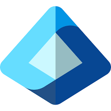
Microsoft Entra ID
Centre d'administration utilisé pour la gestion des identités cloud, la création des accès conditionnels et la synchronisation hybride.
Active Directory
Service d'annuaire local synchronisé avec Entra ID via Connect Sync pour la gestion des comptes et groupes hybrides.
Microsoft 365
Suite de services applicatifs cloud dont l'ensemble des accès sont filtrés et sécurisés par le déploiement de notre MFA.
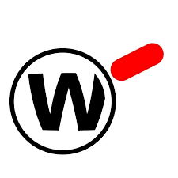
WatchGuard VPN
Pare-feu réseau configuré pour déléguer l'authentification multifacteur de ses télétravailleurs via une intégration SAML.
Les Moyens d'Authentification
Le MFA (Multi-Factor Authentication ou Authentification à Facteurs Multiples) est une méthode qui ajoute une couche de sécurité supplémentaire dans la connexion. Elle est utile quand un utilisateur s’est fait dérober son mot de passe par exemple. Cette méthode se matérialise par l’envoi d’une notification à l’utilisateur après l’entrée de son mot de passe.
Lors de ce projet, nous avons mis en place deux moyens de double-authentification :
Microsoft Authenticator :
Authenticator est une application créée par Microsoft qui permet notamment la connexion à la suite Office 365. Lors de la saisie du mot de passe, une pop-up apparaît avec un nombre à deux chiffres. L’utilisateur peut alors rentrer ce code sur son téléphone pour se connecter.
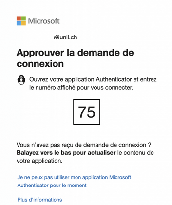
Token physique :
Pour l'alternative physique, nous utilisons le token C202 de token2. Cette fois, lors de la connexion, un code à 6 chiffres est demandé. Celui-ci est généré par le token à l’aide du hash SHA1 de sa seed (clé secrète unique) et d’un facteur de temps.
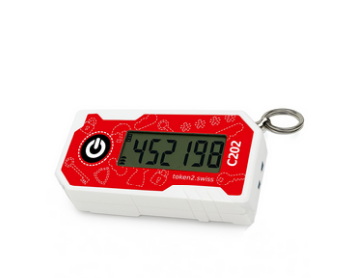
Logique et Détail des Stratégies
Avant d'implémenter nos accès conditionnels dans Entra ID, il était nécessaire de résumer la logique des droits avec des tableaux. En effet, une personne ne peut être que dans un seul de ces groupes à la fois et la méthode MFA exigée dépend fortement du profil.
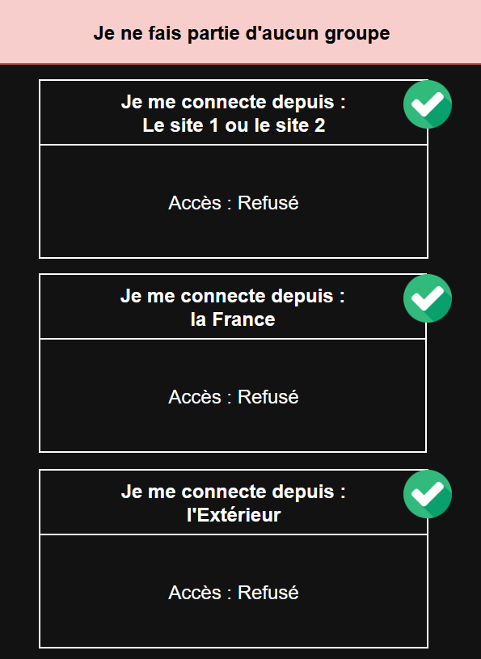
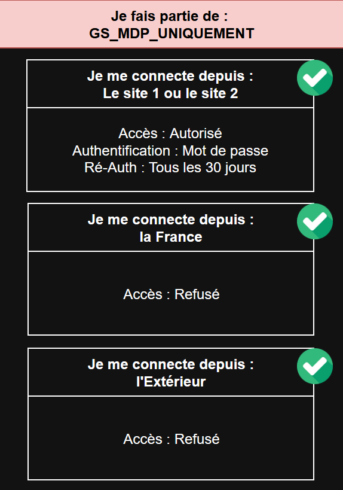
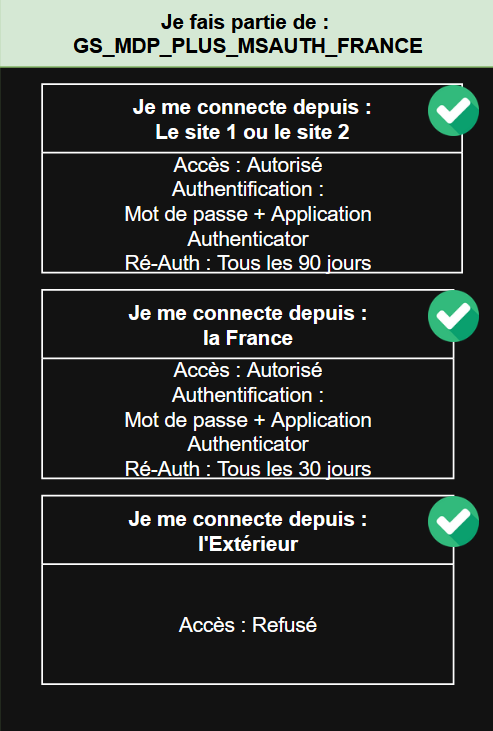
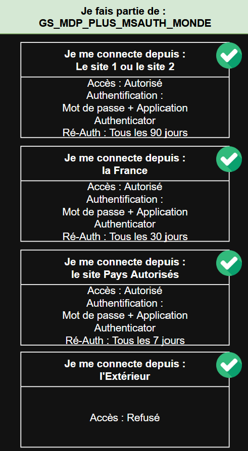
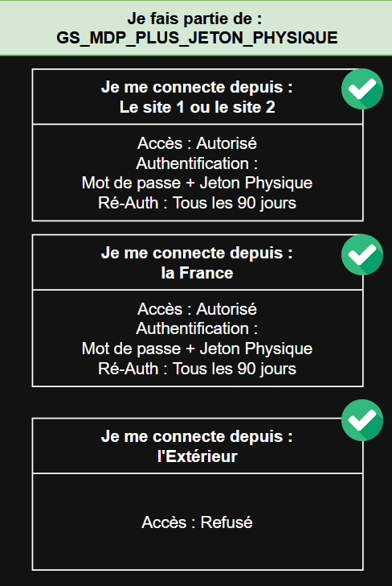
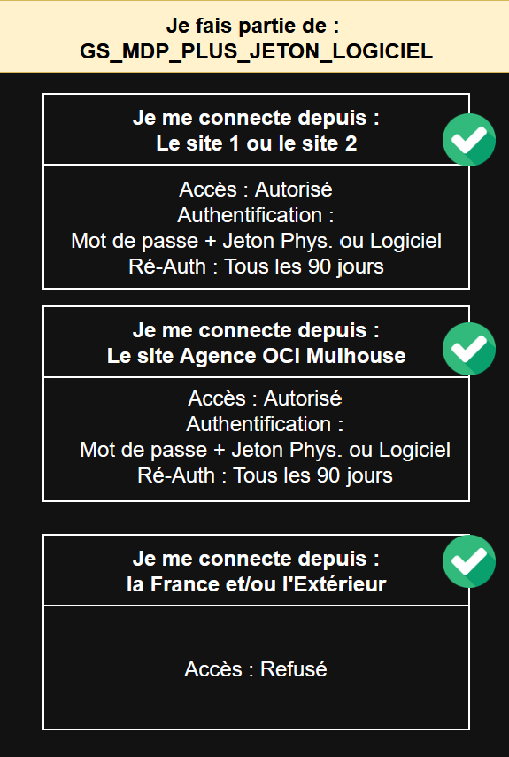
Procédure - Partie MFA 365
1 - Création des groupes sur l’AD et Entra
Pour chacune des possibilités définies précédemment, nous avons créé dans l’AD un groupe de sécurité GS_..._AD qui regroupe les utilisateurs auxquels s’appliquent ces stratégies.
En parallèle, nous avons créé leur équivalent dans Microsoft Entra pour les comptes “cloud only” (qui ne sont pas définis dans l’AD), comme certains comptes d’administrateurs ou encore des comptes génériques tels que les boîtes aux lettres partagées.
Note : Une personne ne peut être que dans un seul de ces groupes à la fois.
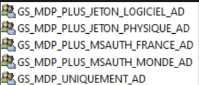
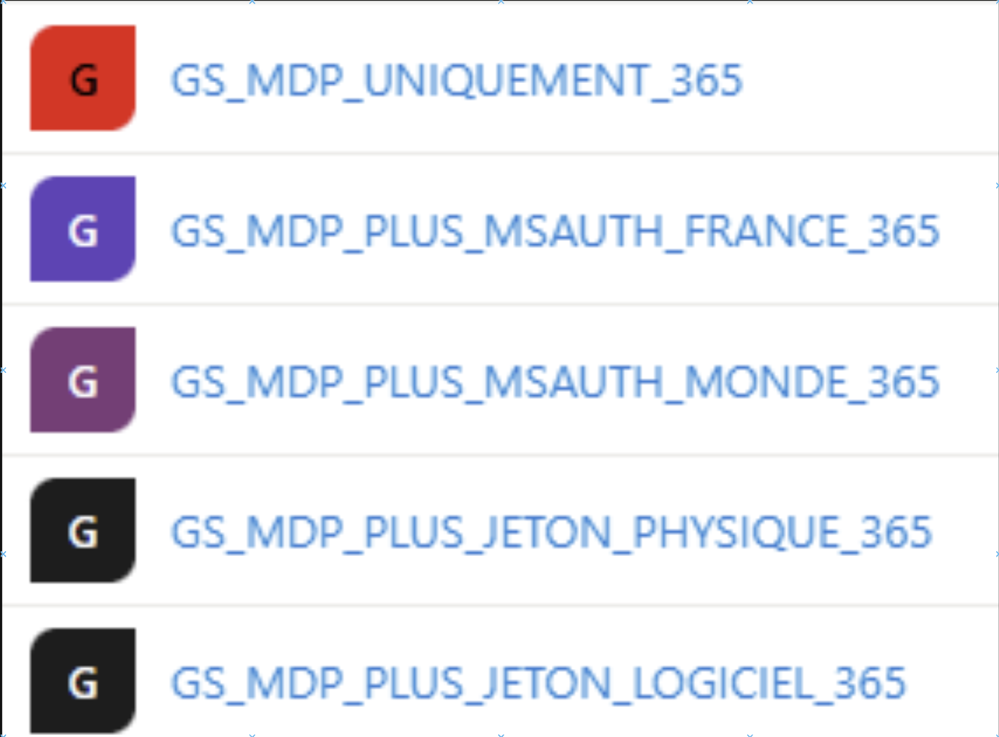
2 - Création des points forts d’authentification
Nous définissons ici les différents moyens de connexion pour les utilisateurs. Si l'on reprend les catégories, nous avons configuré 4 méthodes :
- Mot de passe uniquement
- Mot de passe et jeton logiciel tiers
- Mot de passe et jeton physique
- Mot de passe et Microsoft Authenticator
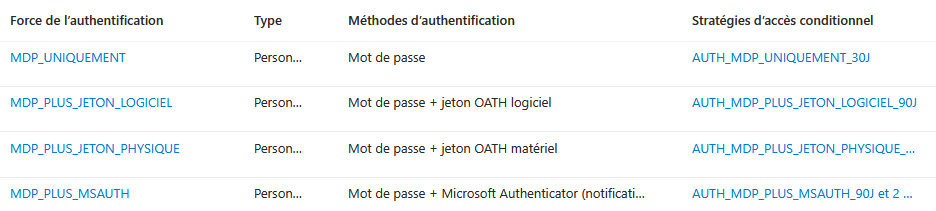
3 - Création des emplacements nommés
Afin que les conditions de connexion s’appliquent en fonction de la localisation, nous avons créé des emplacements nommés, en définissant des lieux auxquels les stratégies seront ensuite appliquées.
Nous avons pu définir ces points de deux façons :
- Pour les pays, en choisissant pays par pays.
- Pour les lieux comme l’agence et les deux sites locaux, en indiquant une liste précise d’IP publiques.
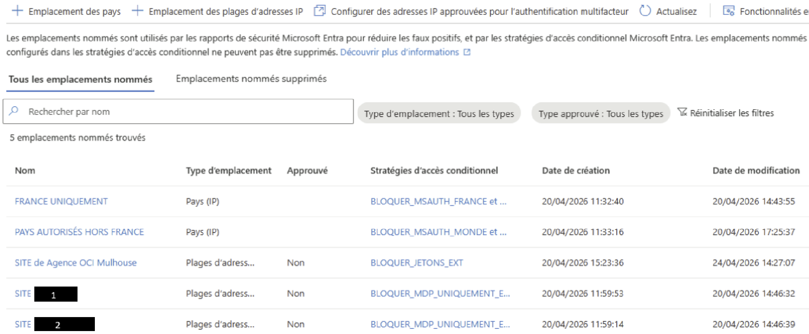
4 - Création des stratégies
Nous allons attribuer aux différents groupes créés des méthodes d’authentifications, ainsi que des temps avant ré-authentification (par exemple, quelqu’un travaillant sur site devra se reconnecter via Authenticator tous les 3 mois, alors que quelqu’un travaillant en dehors de la France devra se reconnecter tous les 7 jours).
Logique de création des stratégies :
Si un utilisateur est concerné par deux stratégies à la fois, c’est la plus restrictive qui s’applique. Sachant cela, nous avons d’abord créé les stratégies qui bloquent la connexion :
- BLOQUER_NO_GROUP : si l’utilisateur n’est dans aucun des groupes, son authentification est forcément bloquée.
- BLOQUER_MDP_UNIQUEMENT_EXT : si l’utilisateur n’a qu’un mot de passe sans MFA, il est bloqué partout sauf sur site.
- BLOQUER_JETONS_PHYSIQUE_EXT / BLOQUER_JETONS_LOGICIEL_EXT : Si l’utilisateur dispose d’un jeton physique ou d’un jeton logiciel tiers, il est bloqué s’il se connecte en dehors de la France.
- BLOQUER_MSAUTH_FRANCE : Même chose version Authenticator.
- BLOQUER_MSAUTH_MONDE : Si l’utilisateur se connecte depuis un autre pays non autorisé, il est forcément bloqué.
Stratégies d'octroi d'accès :
Ensuite, nous définissons nos stratégies dans les cas où l’utilisateur peut se connecter :
- AUTH_MDP_UNIQUEMENT_30J
- AUTH_MDP_PLUS_JETON_LOGICIEL_90J
- AUTH_MDP_PLUS_JETON_PHYSIQUE_90J
- AUTH_MDP_PLUS_MSAUTH_7J
- AUTH_MDP_PLUS_MSAUTH_30J
- AUTH_MDP_PLUS_MSAUTH_90J
Par exemple, si un utilisateur du groupe GS_MDP_PLUS_MSAUTH_MONDE se connecte depuis l’Allemagne, pays autorisé, une réauthentification périodique de 7 jours lui est appliquée et la connexion via Authenticator est forcée.
Une fois que nos stratégies sont définies et appliquées, nous pouvons faire installer l’application aux utilisateurs.
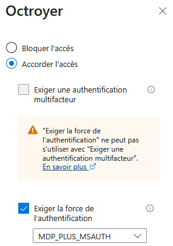
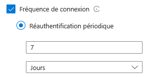
Deuxième Partie : Mise en place du MFA pour le VPN
Les utilisateurs se connectant au VPN doivent faire partie du groupe SSLVPN-Users dans l’AD.
Pour la connexion, nous avons pu déléguer l’authentification à Microsoft et donc appliquer nos stratégies définies précédemment. Pour mettre en place ce mode de connexion, nous sommes passés par l’ajout d’un serveur d’authentification SAML. Pour cela, dans Entra -> Applications d’entreprises, nous avons ajouté Firebox Authentication Portal SAML.
Dans la partie Authentification unique, nous avons configuré notre VPN, notamment avec un certificat de signature de jetons récupéré sur la page d’administration du vpn vpn.domain.com/auth/saml. Une fois que ce lien est configuré, nous avons pu gérer la partie utilisateurs.
Côté Utilisateur :
Cette délégation se présente sous la forme suivante : En sélectionnant “S’authentifier avec SAML”, l’utilisateur verra apparaître une page de connexion Microsoft classique, suivi d’un code pour le MFA comme d’habitude.
Note : besoin de maj du client vpn pour la connexion via SAML.
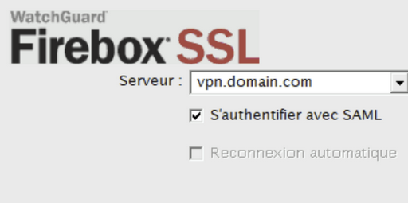
Autres tâches réalisées
Sécurité Mail (DMARC, SPF, DKIM)
Nous avons mis en place une politique DMARC autorisant l'expéditeur à indiquer que ses courriels sont protégés. SPF sert d'« annuaire » des serveurs d'envoi et DKIM de signature sur mail. Ces enregistrements sont stockés dans le DNS.
Audit Microsoft 365
Nous avons réalisé un audit global : passage en revue des utilisateurs et des comptes admin, vérification des licences et de la synchronisation Active Directory / Entra ID, ainsi que l'analyse des problèmes de confidentialité des groupes publics.
Automatisation Powershell
Nous avons utilisé des scripts Powershell pour effectuer des exports de l'Active Directory sur un tableau Excel afin d'assurer une supervision précise des comptes (Hybrides ou Cloud only) et des appartenances aux groupes de sécurité durant le déploiement.
Documentations Techniques
Nous avons créé de nombreux supports : schémas détaillés des stratégies (.drawio), guides de revue par utilisateur, manuels d'attribution des tokens physiques et procédures de résolution des problèmes de synchronisation.
Résumé des problèmes rencontrés
- La logique des stratégies nécessite une grande rigueur car la règle la plus restrictive l'emporte toujours. Une erreur de configuration aurait pu verrouiller l'accès de toute l'entreprise.
- Problèmes de configuration Outlook liés aux différentes versions logicielles et aux habitudes des utilisateurs (différence de gestion entre l'Authentification Moderne et la version Legacy).
- Difficultés d'enregistrement et de synchronisation des tokens physiques dans le cloud en respectant les formats stricts de Microsoft.
Compétences et Apprentissages Critiques
- AC24.02Cyber Mettre en œuvre les outils fondamentaux de sécurisation d’une infrastructure (Accès conditionnel, MFA).
- AC24.03Cyber Sécuriser les services et les données d'un SI (Délégation d'authentification SAML SSO).
- AC21.05 Administrer et sécuriser les services réseaux (Configuration Pare-feu WatchGuard et VPN SSL).
- AC23.01 Automatiser l’administration système avec des scripts (Powershell pour l'AD).
- CE3.02 Documenter le travail réalisé (Création de schémas, procédures de déploiement et guides de dépannage).
Analyse Réflexive
Analyse Réflexive : au cours de ce projet, j’ai pu m’investir dans la mise en place d’une solution de cybersécurité en environnement réel, en participant aux réflexions ainsi qu’à la mise en place de celle-ci. Je l’ai trouvé particulièrement intéressant car il s’appuie sur des notions importantes dans le monde réel, notamment en termes de cybersécurité. De plus, ce projet m’a permis de mettre en applications des compétences concrètes, qu’elles soient techniques ou relationnelles.